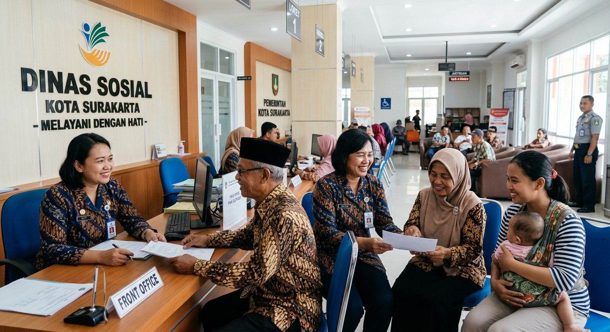

Mencakup data mengenai Pemerlu Pelayanan / Penyandang Masalah Kesejahteraan Sosial (PMKS) dan Potensi serta Sumber Kesejahteraan Sosial (PSKS) di 5 Kecamatan (54 Kelurahan) Kota Surakarta.

Program Pusat Layanan Kesejahteraan Sosial Anak Integratif (PLKSAI) Dinas Sosial Kota Surakarta bersama jejaring Sakti Peksos melakukan pencegahan keterlantaran anak, edukasi ramah anak di sekolah (PGTS), konseling keluarga rentan, serta pemenuhan hak dasar anak di Kota Surakarta.
Standar Layanan AnakPemutakhiran basis data keluarga miskin terintegrasi Puskesos Kelurahan se-Kota Surakarta.
Penguatan aksesibilitas dan pemberdayaan ekonomi produktif penyandang disabilitas di Kota Solo.
Perlindungan jaminan sosial ketenagakerjaan bagi pekerja sektor informal rentan di Surakarta.
Sosialisasi pencegahan perundungan dan perlindungan kesejahteraan sosial anak integratif.